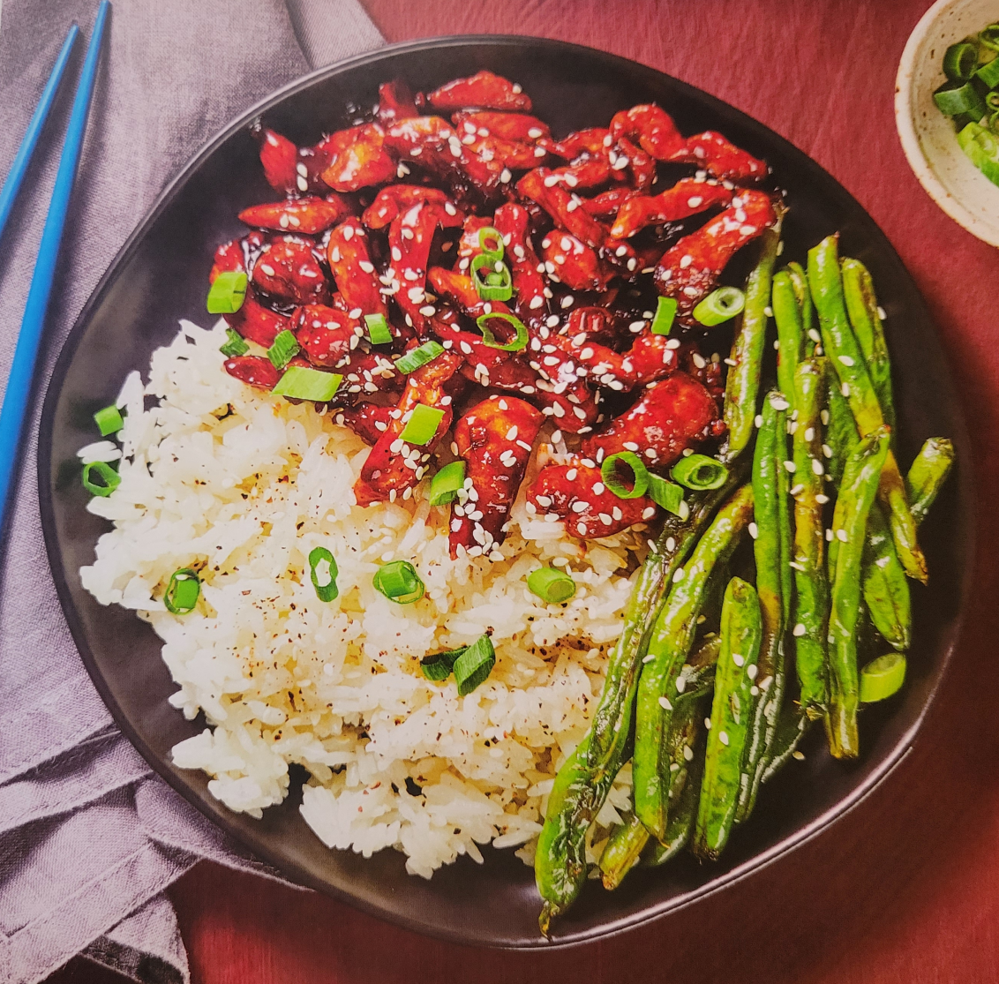

Home
Hoisin Honey Chicken

Ingredients
- 1 Cup - Jasmine Rice
- 2 - Scallions
- 1 Thumb - Ginger
- 4 TBSP - Hoisin Sauce
- 1 tsp - Sriracha
- 2 tsp - honey
- 10 oz - Chicken Breast
- 6 oz - Green Beans
- 1 TBSP - Sesame Seeds
Bust Out
- Small pot
- Baking sheet
- Small bowl
- Paper towels
- Large pan
- Salt
- Pepper
- Cooking Oil (1 TBSP)
1) Cook Rice
- Adjust rack to top position and preheat oven to 425 degrees
- Wash and dry produce
- In a small pot, combine rice, 3/4 cup water, and a big pinch of salt
- Bring to a boil, then cover and reduce to a low simmer
- Cook until rice is tender, 15-18 minutes
- Keep covered off heat until ready to serve
2) Roast Green Beans
- While rice cooks, trim green beans if necessary
- Toss on a baking sheet with a drizzle of oil, salt, and pepper
- Roast on top rack until golden brown and tender, 12-15 minutes
3) Prep & Make Sauce
- Meanwhile, trim and thinly slice scallions, seperating whites from greens
- Peel and mince ginger
- In a small bowl, combine hoisin, honey, 2 TBSP water, and Sriracha to taste
4) Cook Chicken
- Pat chicken dry with paper towels and season with salt and pepper
- Heat a large drizzle of oil in a large pan over meduim-high heat
- Add chicken in a single layer and cook, stiring occastionally, until browned and almost cooked through, 3-5 minutes
5) Coat Chicken
- Once chicken is browned, add scallion whites and ginger to pan
- Cook until fragrant, 1 minute
- Pour in hoisin honey sauce
- Cook until sauce has thickened and chicken is coated and cooked through, 2-3 minutes
- Turn off heat
6) Finish & Serve
- Fluff rice with a fork and season with salt and pepper
- Divide rice, green beans, and chicken between plates
- Garnish with scallion greens and sesame seeds
- Serve